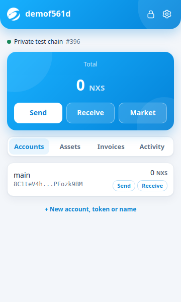
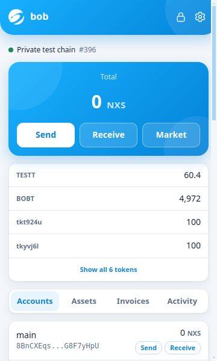
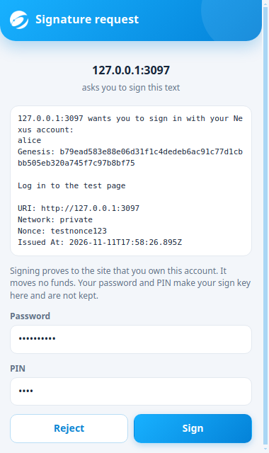
A complete Nexus wallet that lives in the browser toolbar, like MetaMask does for other chains. It keeps your login in the browser, shows balances and history, sends and receives NXS and tokens, and lets websites ask you to connect, sign in or pay.
The extension does all the signing itself. It only talks to a Nexus node to read the chain and to hand over finished transactions. Your username, password and PIN never leave the browser, and nothing has to be downloaded or synced on your computer.
Best for: everyone who just wants a wallet.
The extension connects to the core of the Nexus desktop wallet on the same computer (or to your own node). The core holds the login and signs, the extension is a fast window to it, also for websites.
Best for: people who already run the desktop wallet, and staking.
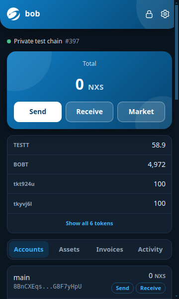
Until the extension is published in the Chrome Web Store and on Firefox Add-ons, it is installed from the release zip. It takes about a minute.
nexus-wallet-extension-0.1.0-chrome.zip from the release page and unzip it into a folder you keep (the browser loads it from there).chrome://extensions (Edge: edge://extensions) and switch on Developer mode.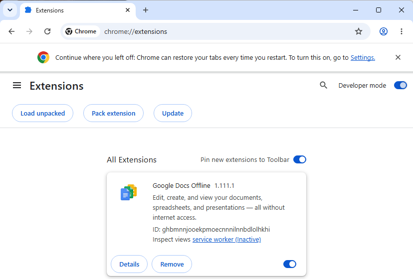
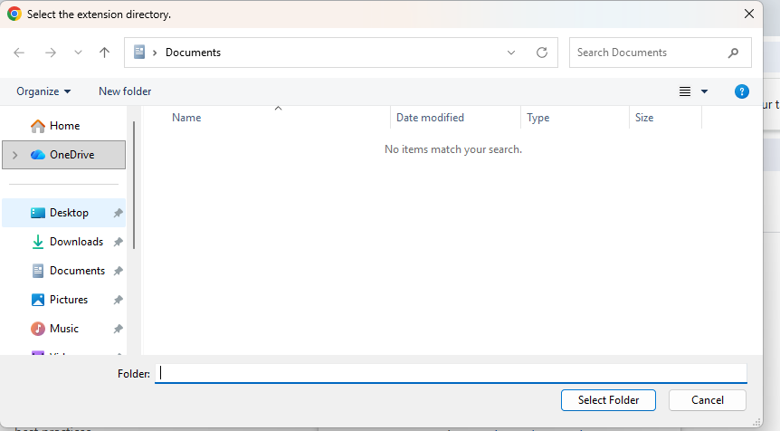
Open about:debugging, This Firefox, Load Temporary Add-on and pick manifest.json in the unzipped nexus-wallet-extension-0.1.0-firefox.zip. Firefox removes a temporary add-on when it closes, so for daily use Firefox needs the signed version from Firefox Add-ons (planned).
Without a desktop wallet: tick Sign in this browser, connect to a Nexus node, create the account. That is all.
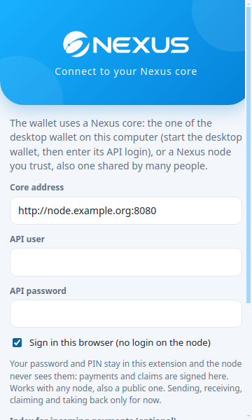
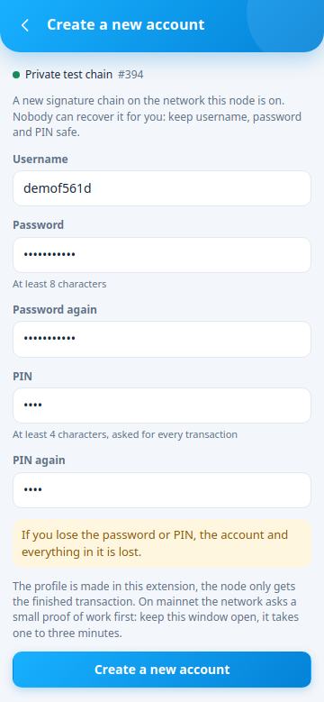
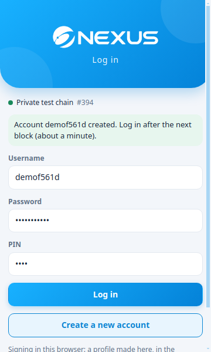
Log in and the wallet is there: balance, accounts, an address to receive. Share the address, or your name, and you can receive NXS.
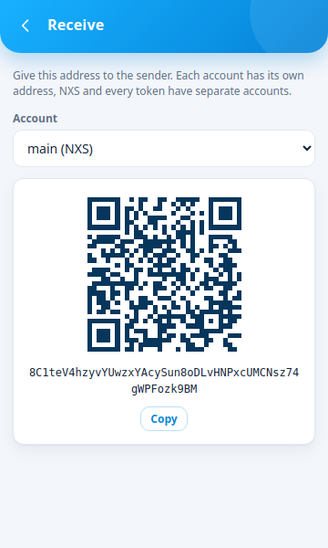
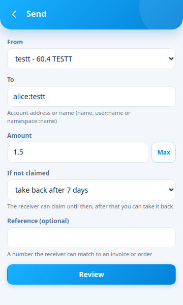
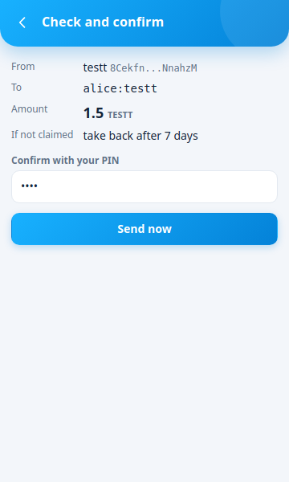
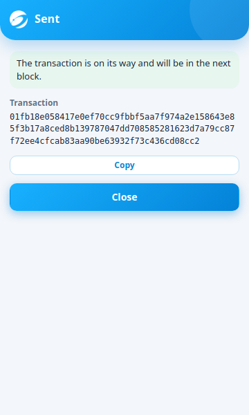
Pick the account to pay from, type an address or a name (bob, bob:savings, a global name) or pick a contact, enter the amount and review. Nothing leaves the wallet before you confirm with your PIN.
On Nexus a payment waits until the receiver claims it. The wallet finds payments sent to you, shows how many wait on the toolbar icon, and Claim all takes them in one transaction. If a payment is not claimed in time (7 days by default, you choose when sending), the sender can take it back from its details.
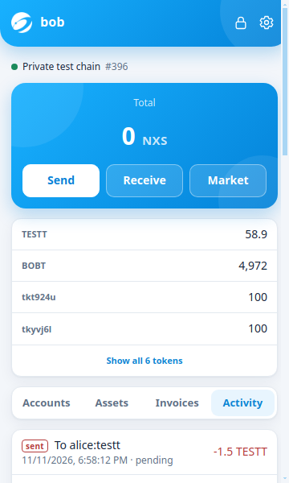
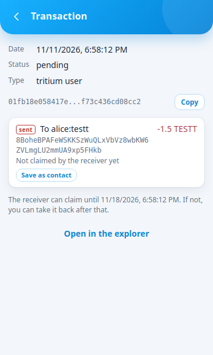
Every website can talk to the wallet through window.nexus. The site asks, the wallet opens a window, you decide. The site never sees your password or PIN.
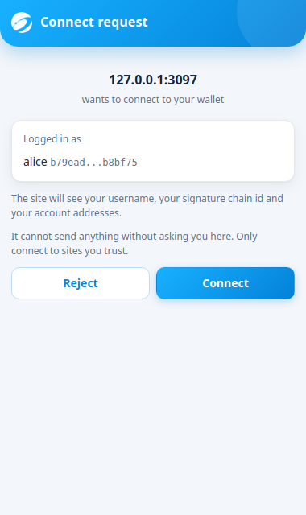
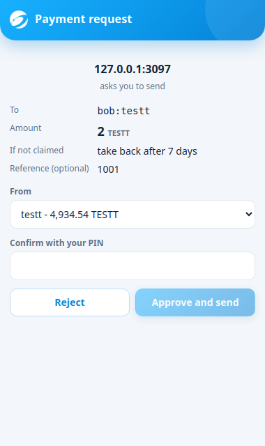
// connect: the user approves once per site const info = await window.nexus.request({ method: 'nexus_connect' }); // { genesis, username, accounts } // sign in with Nexus: the wallet writes the text with your site, account, network and nonce const signed = await window.nexus.request({ method: 'nexus_signIn', params: { nonce: 'k3J9x2Lm', statement: 'Log in to the shop' } }); // server: verifySignedText(signed, cryptoRegisterFromNode(node), 'https://shop.example') // payment: the user picks the account and confirms with the PIN in the wallet window const { txid } = await window.nexus.request({ method: 'nexus_send', params: { to: 'shop:payments', amount: 12.5, reference: '1001' } });
Also for sites: balances, assets, paying invoices and market orders. Sign in with Nexus needs no change to the Nexus core: the signature is checked against the public key hash in the account's crypto register, readable from any node without a login. A developer package with types and the server side check is in the repository.
The desktop wallet runs a full Nexus core: it downloads the whole blockchain and keeps it in sync before you can use it. In light wallet mode the extension leaves that to a node on the network. It reads only what it needs (your own chain, account states, a transaction) and submits transactions it has already signed. So a node shared by many people is fine: it never sees a login.
| Piece | What it is | Status |
|---|---|---|
| Public Nexus node | Any LLL-TAO node with its API reachable over https, used for reading and submitting | Needed for a public release |
| Index for incoming | Optional: an explorer backend that lists payments sent to you, so nothing older than the newest blocks is missed | Optional, prepared |
| Store signing | Chrome Web Store and Firefox Add-ons listing, so installing is one click | Open |
| Wallet | All functions above | Done, tested on testnet |